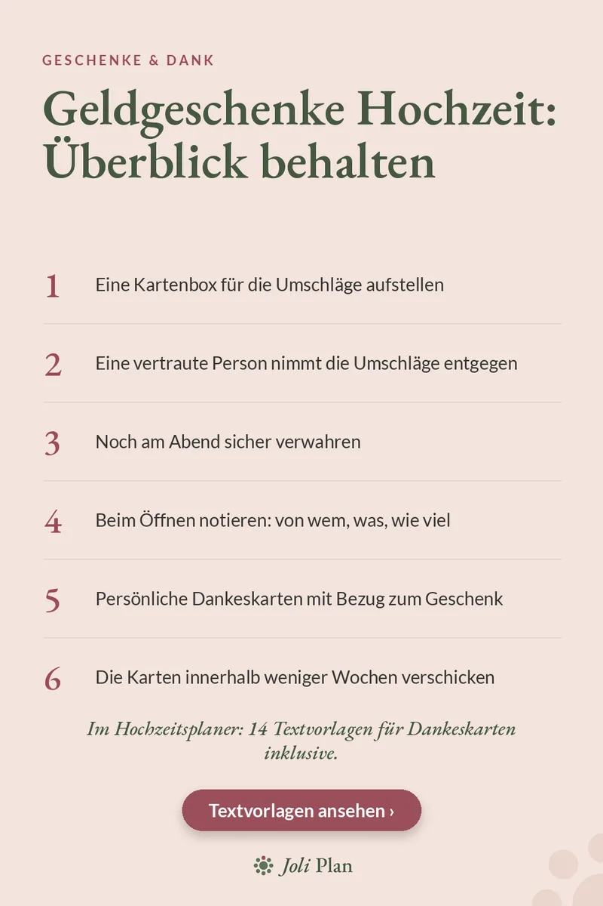

Geschenke & Dank
Geldgeschenke Hochzeit: Überblick behalten in 6 Schritten
Aktualisiert am 28/10/2026
Viele Gäste schenken Geld, meist in einem Umschlag. Damit am Ende niemand vergessen wird und nichts verloren geht, hilft eine feste Reihenfolge. Hier sind sechs Schritte, vom Aufstellen der Kartenbox bis zur Dankeskarte.
Den Hochzeitsplaner auf Etsy ansehen ›

Die 6 Schritte
- Eine Kartenbox für die Umschläge aufstellen.
- Eine vertraute Person nimmt die Umschläge entgegen.
- Noch am Abend sicher verwahren.
- Beim Öffnen notieren: von wem, was, wie viel.
- Persönliche Dankeskarten mit Bezug zum Geschenk schreiben.
- Die Karten innerhalb weniger Wochen verschicken.
Warum diese Reihenfolge funktioniert
Eine Kartenbox verhindert, dass Umschläge auf Tischen liegen bleiben. Wenn eine vertraute Person sie entgegennimmt, müsst ihr euch am Abend selbst um nichts kümmern.
Wichtig ist, die Umschläge noch am selben Abend sicher zu verwahren. Beim Öffnen schreibt ihr in eine Liste, von wem das Geschenk kommt, was es ist und wie viel: So könnt ihr später jede Karte persönlich schreiben.
Die Dankeskarte
Eine Dankeskarte mit einem Satz zum Geschenk wirkt persönlich: Schreibt zum Beispiel, wofür ihr das Geld verwenden möchtet. Verschickt die Karten innerhalb weniger Wochen, solange der Tag noch frisch in Erinnerung ist.
Häufige Fragen
Wer sollte die Umschläge mit Geldgeschenken entgegennehmen?
Eine vertraute Person, damit ihr euch am Abend nicht selbst darum kümmern müsst.
Was notiert man beim Öffnen der Umschläge?
Von wem das Geschenk kommt, was es ist und wie viel.